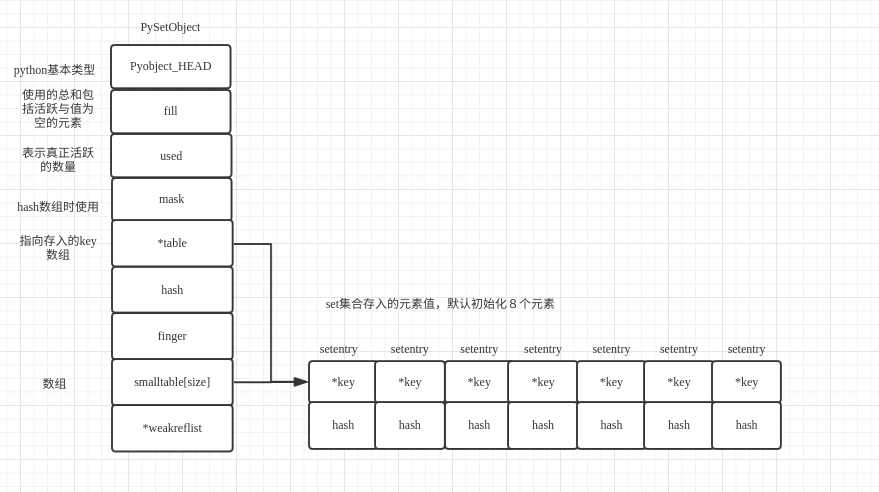
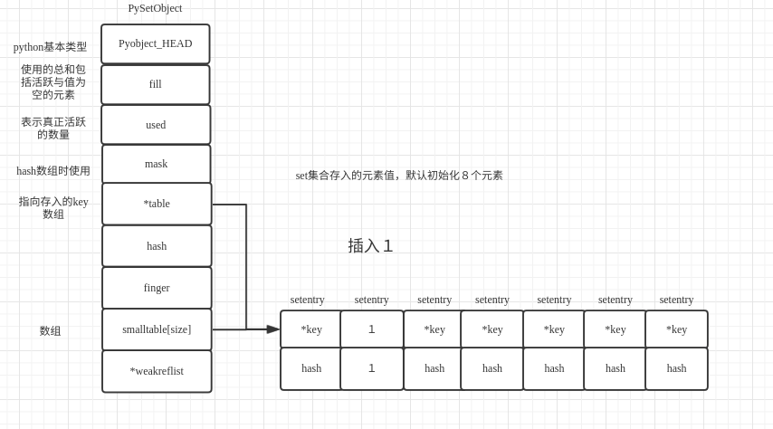

python 集合
set 是无序且不重复的集合，是可变的，通常用来从列表中删除重复项以及计算数学运算，如交集、并集、差分和对称差分等集合操作。set 支持 x in set, len(set),和 for x in set。作为一个无序的集合，set 不记录元素位置或者插入点。因此，sets 不支持 indexing, 或其它类序列的操作。
python 集合概述
在 set 中，对应的 set 的值的存储是通过结构 setentry 来保存数据值的；
typedef struct {
PyObject *key;
Py_hash_t hash; /* Cached hash code of the key */
} setentry;
key 就是保存的数据，hash 就是保存的数据的 hash，便于查找，set 也是基于 hash 表来实现。对应的 setentry 所对应的 set 的数据结构如下；
typedef struct {
PyObject_HEAD
Py_ssize_t fill; /* Number active and dummy entries*/ // 包括已经使用的entry与空entry值的总和
Py_ssize_t used; /* Number active entries */ // 已经使用可用的总量
/* The table contains mask + 1 slots, and that's a power of 2.
* We store the mask instead of the size because the mask is more
* frequently needed.
*/
Py_ssize_t mask; // 与hash求和的mask
/* The table points to a fixed-size smalltable for small tables
* or to additional malloc'ed memory for bigger tables.
* The table pointer is never NULL which saves us from repeated
* runtime null-tests.
*/
setentry *table; // 保存数据的数组数组指针
Py_hash_t hash; /* Only used by frozenset objects */
Py_ssize_t finger; /* Search finger for pop() */
setentry smalltable[PySet_MINSIZE]; // 保存数据的数组 默认初始化为8个元素，通过table指向
PyObject *weakreflist; /* List of weak references */
} PySetObject;
一个 set 就对应一个 PySetObject 类型数据，set 会根据保存的元素自动调整大小。相关的内存布局如下；

python 集合(set)示例
示例脚本如下：
set_a = {1,2}
set_a.add(3)
set_a.add(4)
set_a.remove(1)
set_a.update({3,})
set_a.union({1,5})
通过 python 反汇编获取该脚本的字节码；
python -m dis set_test.py
输出的字节码如下所示；
1 0 LOAD_CONST 0 (1)
3 LOAD_CONST 1 (2)
6 BUILD_SET 2
9 STORE_NAME 0 (set_a)
2 12 LOAD_NAME 0 (set_a)
15 LOAD_ATTR 1 (add)
18 LOAD_CONST 2 (3)
21 CALL_FUNCTION 1
24 POP_TOP
3 25 LOAD_NAME 0 (set_a)
28 LOAD_ATTR 1 (add)
31 LOAD_CONST 3 (4)
34 CALL_FUNCTION 1
37 POP_TOP
4 38 LOAD_NAME 0 (set_a)
41 LOAD_ATTR 2 (remove)
44 LOAD_CONST 0 (1)
47 CALL_FUNCTION 1
50 POP_TOP
5 51 LOAD_NAME 0 (set_a)
54 LOAD_ATTR 3 (update)
57 LOAD_CONST 2 (3)
60 BUILD_SET 1
63 CALL_FUNCTION 1
66 POP_TOP
6 67 LOAD_NAME 0 (set_a)
70 LOAD_ATTR 4 (union)
73 LOAD_CONST 0 (1)
76 LOAD_CONST 4 (5)
79 BUILD_SET 2
82 CALL_FUNCTION 1
85 POP_TOP
86 LOAD_CONST 5 (None)
89 RETURN_VALUE
通过该字节码指令可知，创建 set 调用了 BUILD_SET 指令，初始化完成之后，就调用 set 的 add 方法添加元素，调用 remove 删除元素,调用 update 来更新集合，通过 union 来合并集合。接下来就详细分析一下相关的操作流程。
set 的创建与初始化
查找 BUILD_SET 的虚拟机执行函数如下；
源文件：Python/ceval.c
// Python/ceval.c
TARGET(BUILD_SET) {
PyObject *set = PySet_New(NULL); // 新建并初始化一个set
int err = 0;
int i;
if (set == NULL)
goto error;
for (i = oparg; i > 0; i--) { // 将传入初始化的参数传入
PyObject *item = PEEK(i);
if (err == 0)
err = PySet_Add(set, item); // 并依次对set进行添加操作
Py_DECREF(item);
}
STACKADJ(-oparg); // 移动弹栈
if (err != 0) {
Py_DECREF(set);
goto error;
}
PUSH(set); // 讲set压栈
DISPATCH(); // 执行下一条指令
}
此时继续查看 PySet_New 函数的执行流程；
PyObject *
PySet_New(PyObject *iterable)
{
return make_new_set(&PySet_Type, iterable);
}
...
static PyObject *
make_new_set(PyTypeObject *type, PyObject *iterable)
{
PySetObject *so;
so = (PySetObject *)type->tp_alloc(type, 0); // 申请该元素的内存
if (so == NULL) // 内存申请失败则返回为空
return NULL;
so->fill = 0; // 初始化的时候都为０
so->used = 0;
so->mask = PySet_MINSIZE - 1; // PySet_MINSIZE默认我８，mask为７
so->table = so->smalltable; // 将保存数据的头指针指向table
so->hash = -1; // 设置hash值为-1
so->finger = 0;
so->weakreflist = NULL;
if (iterable != NULL) { // 如果有迭代器
if (set_update_internal(so, iterable)) { // 将内容更新到so中
Py_DECREF(so);
return NULL;
}
}
return (PyObject *)so; // 返回初始化完成的set
}
从 PySet_New 的执行流程可知，字典的初始化过程就是初始化相关数据结构。
set 的插入
在本例的初始化过程中，由于传入了初始值 1,2，所以会在执行字节码指令的时候，执行 PySet_Add，该函数的本质与 set_a.add(3)本质都调用了更底层 set_add_key 函数；
int
PySet_Add(PyObject *anyset, PyObject *key)
{
if (!PySet_Check(anyset) &&
(!PyFrozenSet_Check(anyset) || Py_REFCNT(anyset) != 1)) {
PyErr_BadInternalCall();
return -1;
}
return set_add_key((PySetObject *)anyset, key); // 向字典中添加key;
}
继续查看 set_add_key 函数的执行过程；
static int
set_add_key(PySetObject *so, PyObject *key)
{
Py_hash_t hash;
if (!PyUnicode_CheckExact(key) ||
(hash = ((PyASCIIObject *) key)->hash) == -1) {
hash = PyObject_Hash(key); // 获取传入值的hash值
if (hash == -1) // 如果不能hash则返回-1
return -1;
}
return set_add_entry(so, key, hash); // 计算完成后添加值
}
该函数主要就是检查传入的 key 是否能够被 hash，如果能够被 hash 则直接返回，如果能被 hash 则继续调用 set_add_entry 函数将值加入到 set 中；
static int
set_add_entry(PySetObject *so, PyObject *key, Py_hash_t hash)
{
setentry *table;
setentry *freeslot;
setentry *entry;
size_t perturb;
size_t mask;
size_t i; /* Unsigned for defined overflow behavior */
size_t j;
int cmp;
/* Pre-increment is necessary to prevent arbitrary code in the rich
comparison from deallocating the key just before the insertion. */
Py_INCREF(key); // 提高key的引用计数
restart:
mask = so->mask; // 获取so->mask
i = (size_t)hash & mask; // 通过传入的hash与mask求索引下标
entry = &so->table[i]; // 获取索引对应的值
if (entry->key == NULL) // 如果获取索引的值没有被使用则直接跳转到found_unused处执行
goto found_unused;
freeslot = NULL;
perturb = hash; // perturb设置为当前hash值
while (1) {
if (entry->hash == hash) { // 如果当前hash值相等
PyObject *startkey = entry->key; // 获取当前key
/* startkey cannot be a dummy because the dummy hash field is -1 */
assert(startkey != dummy); // 检查key是否为dummy
if (startkey == key) // 如果找到的值与传入需要设置的值相同则跳转到found_active处执行
goto found_active;
if (PyUnicode_CheckExact(startkey)
&& PyUnicode_CheckExact(key)
&& _PyUnicode_EQ(startkey, key)) // 如果是unicode,通过类型转换检查两个key的内容是否相同，如果不相同则跳转到found_active处
goto found_active;
table = so->table; // 如果没有找到，则获取当前table的头部节点
Py_INCREF(startkey);
cmp = PyObject_RichCompareBool(startkey, key, Py_EQ); // 如果是其他类型的对象则调用比较方法去比较两个key是否相同
Py_DECREF(startkey);
if (cmp > 0) /* likely */ // 如果找到则跳转到found_active
goto found_active;
if (cmp < 0)
goto comparison_error; // 如果小于０，则是两个类型对比失败
/* Continuing the search from the current entry only makes
sense if the table and entry are unchanged; otherwise,
we have to restart from the beginning */
if (table != so->table || entry->key != startkey) // 如果set改变了则重新开始查找
goto restart;
mask = so->mask; /* help avoid a register spill */
}
else if (entry->hash == -1)
freeslot = entry; // 如果不能hash 则设置freeslot
if (i + LINEAR_PROBES <= mask) { // 检查当前索引值加上 ９小于当前mask
for (j = 0 ; j < LINEAR_PROBES ; j++) { // 循环９次
entry++; // 向下一个位置
if (entry->hash == 0 && entry->key == NULL) // 如果找到当前hash为空或者key为空的则跳转到found_unused_or_dummy处执行
goto found_unused_or_dummy;
if (entry->hash == hash) { // 如果找到的hash值相同
PyObject *startkey = entry->key; // 获取该值
assert(startkey != dummy); // 检查是否为dummy
if (startkey == key) // 如果key相同则跳转到found_active处执行
goto found_active;
if (PyUnicode_CheckExact(startkey)
&& PyUnicode_CheckExact(key)
&& _PyUnicode_EQ(startkey, key)) // 检查是否为unicode，并比较如果不相同则跳转到found_active
goto found_active;
table = so->table; // 调用key本身的方法比较
Py_INCREF(startkey);
cmp = PyObject_RichCompareBool(startkey, key, Py_EQ);
Py_DECREF(startkey);
if (cmp > 0)
goto found_active;
if (cmp < 0)
goto comparison_error;
if (table != so->table || entry->key != startkey)
goto restart;
mask = so->mask;
}
else if (entry->hash == -1)
freeslot = entry;
}
}
perturb >>= PERTURB_SHIFT; // 如果没有找到则获取下一个索引值
i = (i * 5 + 1 + perturb) & mask; // 右移５位 加上 索引值*5 加１与mask求余获取下一个索引值
entry = &so->table[i]; // 获取下一个元素
if (entry->key == NULL) // 如果找到为空则直接跳转到found_unused_or_dummy处
goto found_unused_or_dummy;
}
found_unused_or_dummy:
if (freeslot == NULL) // 检查freeslot是否为空如果为空则跳转到found_unused处执行即找到了dummy位置
goto found_unused;
so->used++; // 使用数加１
freeslot->key = key; // 设置key与hash值
freeslot->hash = hash;
return 0;
found_unused:
so->fill++; // 使用总数加１
so->used++; // 使用总数加１
entry->key = key; // 设置key与hash值
entry->hash = hash;
if ((size_t)so->fill*5 < mask*3) // 检查已经使用的值是否是总数的3/5
return 0;
return set_table_resize(so, so->used>50000 ? so->used*2 : so->used*4); // 如果已使用的总数大于3/5则重新调整table，如果set使用的总数超过了50000则扩展为以前的２倍否则就是四倍
found_active:
Py_DECREF(key); // 如果找到了该值 则什么也不做
return 0;
comparison_error:
Py_DECREF(key); // 如果比较失败则返回-1
return -1;
}
此时基本的流程就是通过传入的 hash 值，如果计算出的索引值，没有值，则直接将该值存入对应的 entry 中，如果相同则不插入，如果索引对应的值且值不同，则遍历从该索引往后９个位置的值，依次找到有空余位置的值，并将该值设置进去。如果设置该值之后使用的数量占总的申请数量超过了 3/5 则重新扩充 set，扩充的原则就是如果当前的 set->used>50000 就进行两倍扩充否则就进行四倍扩充。
插入的概述如下,默认 s 初始化为空；
s.add(1) // index = 1 & 7 = 1

s.add(2) // index = 2 & 7 = 2

s.add(7) // index = 9 & 7 = 1

大致的 set 的插入过程执行完毕。
set 的删除
set 的删除操作主要集中在 set_remove()函数上，如下示例；
static PyObject *
set_remove(PySetObject *so, PyObject *key)
{
PyObject *tmpkey;
int rv;
rv = set_discard_key(so, key); // 将该key设置为dummy
if (rv < 0) {
if (!PySet_Check(key) || !PyErr_ExceptionMatches(PyExc_TypeError)) // 检查是否为set类型
return NULL;
PyErr_Clear();
tmpkey = make_new_set(&PyFrozenSet_Type, key); // 对该值重新初始化为forzenset
if (tmpkey == NULL)
return NULL;
rv = set_discard_key(so, tmpkey); // 设置该key为空
Py_DECREF(tmpkey);
if (rv < 0)
return NULL;
}
if (rv == DISCARD_NOTFOUND) { // 如果没有找到则报错
_PyErr_SetKeyError(key);
return NULL;
}
Py_RETURN_NONE;
}
此时就会调用 set_discard_key 方法来讲对应的 entry 设置为 dummy；set_discard_key 方法如下；
static int
set_discard_key(PySetObject *so, PyObject *key)
{
Py_hash_t hash;
if (!PyUnicode_CheckExact(key) ||
(hash = ((PyASCIIObject *) key)->hash) == -1) {
hash = PyObject_Hash(key); // 检查是否可用hash如果可用则调用set_discard_entry方法
if (hash == -1)
return -1;
}
return set_discard_entry(so, key, hash);
}
该函数主要就是做了检查 key 是否可用 hash 的检查，此时如果可用 hash 则调用 set_discard_entry 方法；
static int
set_discard_entry(PySetObject *so, PyObject *key, Py_hash_t hash)
{
setentry *entry;
PyObject *old_key;
entry = set_lookkey(so, key, hash); // 查找该值 set_lookkey该方法与插入的逻辑类似大家可自行查看
if (entry == NULL) // 如果没有找到则返回－１
return -1;
if (entry->key == NULL)
return DISCARD_NOTFOUND; // 找到entry而key为空则返回notfound
old_key = entry->key; // 找到正常值则讲该值对应的entry设置为dummy
entry->key = dummy;
entry->hash = -1; // hash值为-1
so->used--; // 使用数量减１ 但是fill数量未变
Py_DECREF(old_key); // 减少该对象引用
return DISCARD_FOUND; // 返回返现
}
此时就是查找该值，如果找到该值并将该值设置为 dummy，并且将 used 值减１，此处没有减去 fill 的数量，从此处可知，fill 包括所有曾经申请过的数量。
set 的 resize
set 的 resize 主要依靠 set_table_reseize 函数来实现；
static int
set_table_resize(PySetObject *so, Py_ssize_t minused)
{
setentry *oldtable, *newtable, *entry;
Py_ssize_t oldmask = so->mask; // 设置旧的mask
size_t newmask;
int is_oldtable_malloced;
setentry small_copy[PySet_MINSIZE]; // 最小的拷贝数组
assert(minused >= 0);
/* Find the smallest table size > minused. */
/* XXX speed-up with intrinsics */
size_t newsize = PySet_MINSIZE;
while (newsize <= (size_t)minused) {
newsize <<= 1; // The largest possible value is PY_SSIZE_T_MAX + 1. // 查找位于minused最大的PySet_MINSIZE的n次方的值
}
/* Get space for a new table. */
oldtable = so->table; // 先获取旧的table
assert(oldtable != NULL);
is_oldtable_malloced = oldtable != so->smalltable;
if (newsize == PySet_MINSIZE) { // 如果获取的新大小与PySet_MINSIZE的大小相同
/* A large table is shrinking, or we can't get any smaller. */
newtable = so->smalltable; // 获取新table的地址
if (newtable == oldtable) { // 如果相同
if (so->fill == so->used) { // 如果使用的相同则什么都不做
/* No dummies, so no point doing anything. */
return 0;
}
/* We're not going to resize it, but rebuild the
table anyway to purge old dummy entries.
Subtle: This is *necessary* if fill==size,
as set_lookkey needs at least one virgin slot to
terminate failing searches. If fill < size, it's
merely desirable, as dummies slow searches. */
assert(so->fill > so->used);
memcpy(small_copy, oldtable, sizeof(small_copy)); // 将数据拷贝到set_lookkey中
oldtable = small_copy;
}
}
else {
newtable = PyMem_NEW(setentry, newsize); // 新申请内存
if (newtable == NULL) { // 如果为空则申请内存失败报错
PyErr_NoMemory();
return -1;
}
}
/* Make the set empty, using the new table. */
assert(newtable != oldtable); // 检查新申请的与就table不同
memset(newtable, 0, sizeof(setentry) * newsize); // 新申请的内存置空
so->mask = newsize - 1; // 设置新的size
so->table = newtable; // 重置table指向新table
/* Copy the data over; this is refcount-neutral for active entries;
dummy entries aren't copied over, of course */
newmask = (size_t)so->mask; // 获取新的mask
if (so->fill == so->used) { // 如果使用的与曾经使用的数量相同
for (entry = oldtable; entry <= oldtable + oldmask; entry++) {
if (entry->key != NULL) {
set_insert_clean(newtable, newmask, entry->key, entry->hash); // 如果值不为空则插入到新的table中
}
}
} else {
so->fill = so->used; // 如果不相同则重置fill为used的值
for (entry = oldtable; entry <= oldtable + oldmask; entry++) {
if (entry->key != NULL && entry->key != dummy) { // 检查如果不为dummy并且key不为空的情况下
set_insert_clean(newtable, newmask, entry->key, entry->hash); // 重新插入该列表该值
}
}
}
if (is_oldtable_malloced) // 如果两个表相同则删除旧table
PyMem_DEL(oldtable);
return 0; // 返回０
}
主要是检查是否 table 相同并且需要重新 resize 的值，然后判断是否 fill 与 used 相同，如果相同则全部插入，如果不同，则遍历旧 table 讲不为空并且不为 dummy 的值插入到新表中；
static void
set_insert_clean(setentry *table, size_t mask, PyObject *key, Py_hash_t hash)
{
setentry *entry;
size_t perturb = hash;
size_t i = (size_t)hash & mask; // 计算索引
size_t j;
while (1) {
entry = &table[i]; // 获取当前entry
if (entry->key == NULL) // 如果为空则跳转值found_null设置key与hash
goto found_null;
if (i + LINEAR_PROBES <= mask) { // 如果没有找到空值则通过该索引偏移9位去查找空余位置
for (j = 0; j < LINEAR_PROBES; j++) {
entry++;
if (entry->key == NULL) // 如果为空则跳转到found_null
goto found_null;
}
}
perturb >>= PERTURB_SHIFT; // 计算下一个索引值继续寻找
i = (i * 5 + 1 + perturb) & mask;
}
found_null:
entry->key = key;
entry->hash = hash;
}
set 的 resize 的操作基本如上所述。